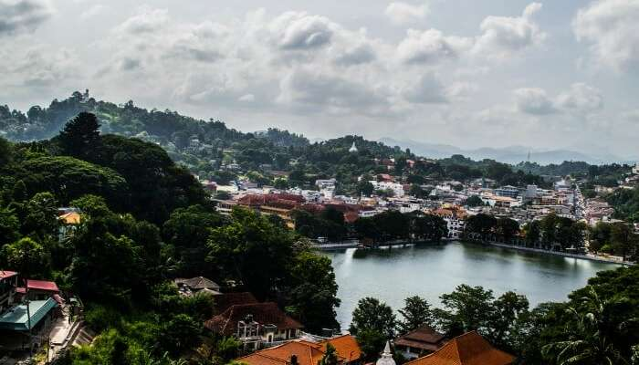
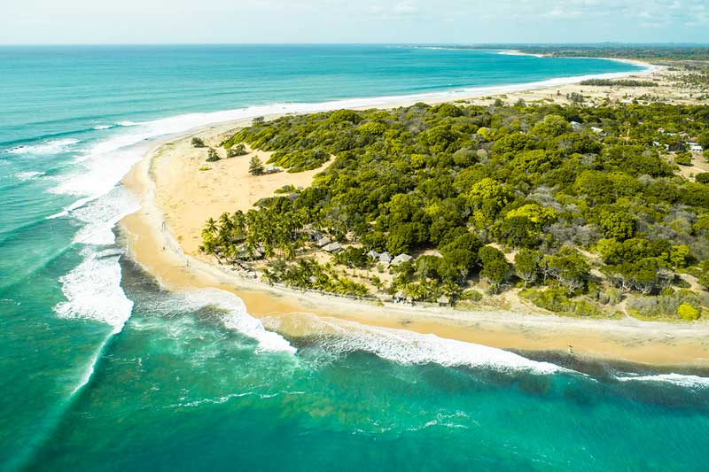
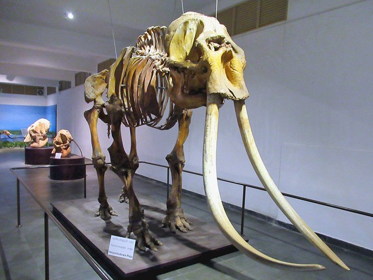

Home
Booking Application Details
Booking Application Form
Search Booking Application Details
Contact Us
Most Visited Places In Sri Lanka
Colombo Lotus Tower
Colombo Lotus Tower One of the coolest places to visit in Colombo is also one of the city's newest attractions. The Colombo Lotus Tower is South Asia's tallest freestanding structure (368 meters/1,168 feet), and a trip to the top rewards visitors with unobstructed views across Colombo and the surrounding cityscape and sea. The tower, which houses a lot of telecommunications equipment, has a telecom museum, a shopping mall, a revolving fine dining restaurant, a hotel, and indoor and outdoor observation areas. The tower is also a sight to see from the outside - it's covered in LED lighting and presents seasonal themed lighting displays each night. The Lotus Tower, designed to replicate a lotus bulb and flower, simultaneously represents the historic culture of the country and its focus on the future.
location :Colombo Sri Lanka
Visit Here This Tourism Places
Kandy Lake Best Place To Stroll Around

Kandy Lake Best Place To Stroll Around Top view of Kandy lake and adjoining areas in the heart of Kandy Adjoining most of the popular tourist places in Kandy and eateries with lake view, the Kandy Lake is certainly among the best places to visit in Kandy, Sri Lanka. An ideal place to spend hours during your lazy vacation, the lake offers stunning nature views around it and is a perfect romantic sojourn for a romantic couple visiting the place. The lake, existing since 1807, has a flurry of idyllic places and historical structures around. The lake is also known as the Kiri Muhuda or the Sea of Milk and is an artificial lake. Being in the heart of the city and beside some of the famous attractions of Kandy, it is a popular tourist site. There is also an island in the middle of the lake. Around the lake is built the Wakulla Bamma or the Clouds Wall which increases the beauty of it. If you are in Kandy visiting places, tourists can also see the Ulpan or Queens Bathing Pavilion which is a party in the Kandy Lake.
location:Kandy
Visit Here This Tourism Places
Arugam Bay

Lovely Arugam Bay, a moon-shaped curl of soft sand, is home to a famed point break that many regard as the best surf spot in the country. It's a tiny place, with a population of a few hundred, and everything is dotted along a single road which parallels the coast. So in other words, the epitome of the laid-back beach scene that first drew surfers and sun-seekers to Sri Lanka.
location: Ampara
Visit Here This Tourism Places
National Museum

The National Museum of Colombo, also called the Sri Lanka National Museum, is the official museum of Sri Lanka and takes you on a journey over the thousands of years of Sri Lankan culture. It's one of those museums that has multiple types of media, from artwork to artifacts, as well as clothing, jewelry, coins, arms, and craftwork. The displays show both the cultural and natural heritage of the country, presented chronologically, starting with pre-history and leading to the present day. Give yourself a few hours to fully explore the collections. The museum is housed in a grand Victorian colonial building in central Colombo near Viharamahadevi Park.
location:Colombo
Visit Here This Tourism Places
Pinnawala Elephant Orphanage – See The Giant Beasts
Can you imagine anything as heartwarming as staring at baby elephants as they enjoy a river soak? The Pinnawalla Elephant Orphanage has many reasons to be called one of the beautiful places in Sri Lanka! It won’t be hard to believe if you wouldn’t want to leave this paradise. This place is 13 km away from the town of Kegalle and one can come from any public transport. This is a very popular tourist destination and gives visitors a very different kind of experience. Watching the baby elephants doing mischief and moving here and there is a lifetime experience. One cannot get to see all this anywhere else.
location: Rambukkana
Visit Here This Tourism Places
Adams Peak – The UNESCO World Heritage Site
The next destination is one of the most mesmerizing Sri Lanka tourist places and is known as Adam’s peak. Adam’s peak is amongst the most beautiful places in Sri Lanka. Climb the slopes at night to watch a breathtaking sunrise at dawn that would be hard to forget.
location: Central Sri Lanka
Visit Here This Tourism Places